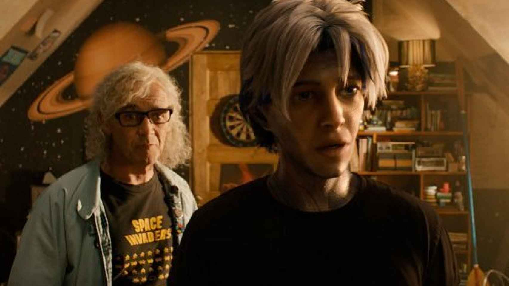
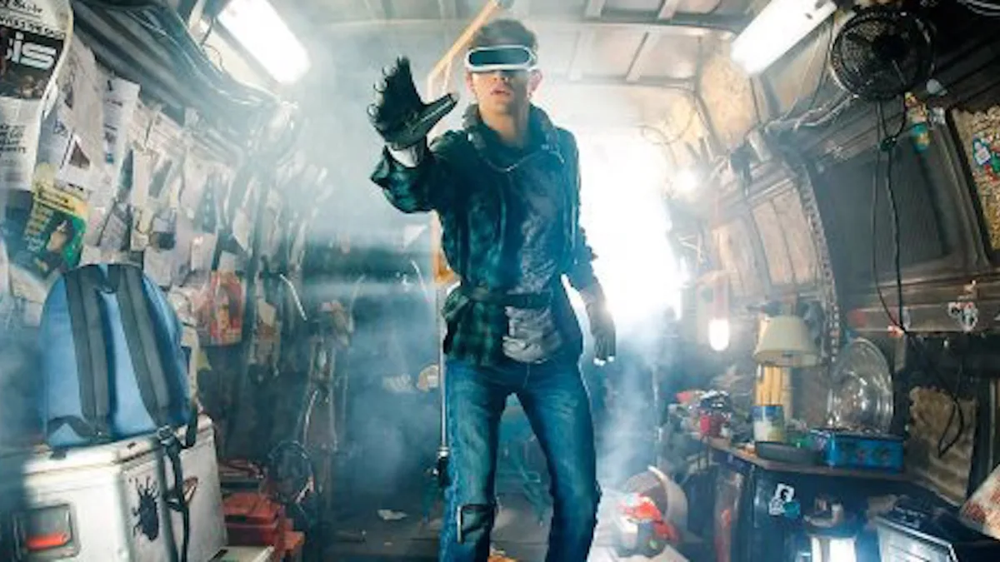
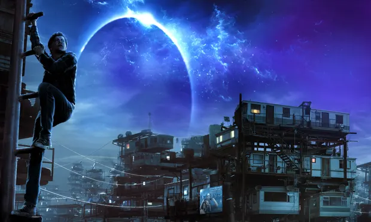

READY PLAYER ONE
Año 2045: el adolescente Wade Watts es solo una de las millones de personas que se evaden del sombrío mundo real para sumergirse en un mundo utópico virtual donde todo es posible: OASIS. Wade participa en la búsqueda del tesoro que el creador de este mundo imaginario dejó oculto en su obra. No obstante, hay gente muy peligrosa compitiendo contra él.
Ready Player One (titulada Ready Player One: Comienza el juego en Hispanoamérica) es una película estadounidense de acción y ciencia ficción de 2018, producida y dirigida por Steven Spielberg, escrita por Zak Penn y Ernest Cline y basada en la novela homónima de Cline. La película está protagonizada por Tye Sheridan, Olivia Cooke, Ben Mendelsohn, T. J. Miller, Simon Pegg y Mark Rylance.
La película recibió críticas generalmente positivas, con elogios a sus imágenes y ritmo rápido, señalando que mejora sobre el libro, pero criticaron la falta de desarrollo de los personajes y la visión "sorprendentemente genial" de los fanáticos de la cultura pop.910